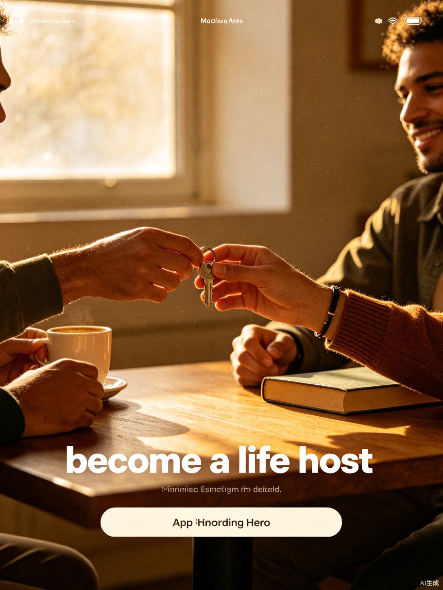

9:41
2 / 4
填写人生详情
草稿箱
选择类型
填写详情
时间价格
审核发布
人生封面

添加封面
建议使用3:4竖图
最多5张
人生名称
好名字能让更多人发现你的人生
选择分类
职业体验
公益志愿
创意手作
户外探险
美食探店
文化艺术
家庭角色
盲盒惊喜
人生介绍
下午2点到我的黑胶唱片店，教你识别不同年代的唱片封面，亲手为你冲一杯手冲咖啡，听3张我最爱的爵士专辑，最后送你一张惊喜唱片作为纪念。
87/500
体验者将获得
专属技能教学
亲手制作的作品带走
人生纪念证书
全程出片拍照
神秘惊喜礼物
适合谁来
音乐爱好者
文艺青年
一个人也ok
情侣约会
闺蜜同行
新手友好
详细的介绍和真实的照片能让体验者更有信心报名，下一步将设置体验时间和价格。
上一步
发布